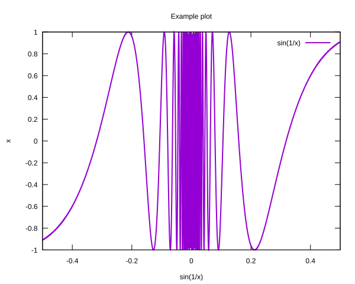
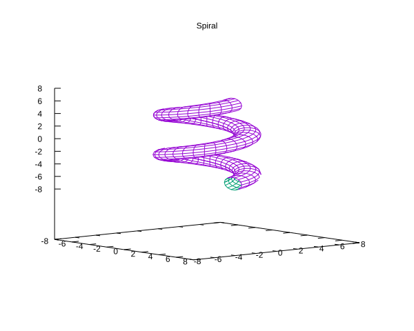
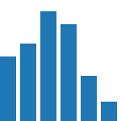

This is an Jupyter notebook backed by a Ruby kernel#
I am developing IRuby a kernel in Ruby that adheres to the Jupyter/IPython messaging protocol. It integrates nicely with different Rubygems as will be shown later.
What does this give you?#
This gives us a very fancy web notebook interface for Ruby. It’s a very good tool for programming presentations. It’s basically an in-browser REPL loop, with some extra goodies.
Usage#
Install IRuby with:
gem install iruby
Start the IRuby notebook with:
iruby notebook
Example#
$stdout and $stderr are redirected to the notebook
puts 'Hello, world!'
Hello, world!
$stderr.puts 'Error!'
Error!
The last computed result is returned.
Math.sqrt(2)
1.4142135623730951
This works even for images.
File.open('IRuby Examples/ruby.svg')

File.open('IRuby Examples/ruby.png')
Display#
IRuby provides a method to display objects IRuby.display and methods to create \(\LaTeX\) and HTML representations.
IRuby.display '<b style="color:green">Hello, world!</b>', mime: 'text/html'
IRuby.html '<iframe src=http://en.mobile.wikipedia.org/?useformat=mobile width=700 height=350></iframe>'
\(\LaTeX\) is rendered using MathJax.
IRuby.display IRuby.latex <<-'TEX'
\begin{eqnarray}
\nabla \times \vec{\mathbf{B}} -\, \frac1c\, \frac{\partial\vec{\mathbf{E}}}{\partial t} & = \frac{4\pi}{c}\vec{\mathbf{j}} \\
\nabla \cdot \vec{\mathbf{E}} & = 4 \pi \rho \\
\nabla \times \vec{\mathbf{E}}\, +\, \frac1c\, \frac{\partial\vec{\mathbf{B}}}{\partial t} & = \vec{\mathbf{0}} \\
\nabla \cdot \vec{\mathbf{B}} & = 0
\end{eqnarray}
TEX
IRuby.math('F(k) = \int_{-\infty}^{\infty} f(x) e^{2\pi i k} dx')
Arrays and Hashes can be printed as HTML tables.
IRuby.display IRuby.table([1,2,[],3])
IRuby.display IRuby.table({a:1,b:2,c:3})
IRuby.display IRuby.table([[11,12,13,14],[21,22,23],'not an Array',[31,32,33,34]])
IRuby.display IRuby.table({a:[11,12,13,14],b:[21,22,23],c:[31,32,33,34]})
IRuby.display IRuby.table([{a:1,b:2,c:3},'not an Array',{a:2,b:3,c:4,e:5}])
IRuby.display IRuby.table([{a:1,b:2,c:3},{a:2,b:3,c:4,d:5},{0=>:x,1=>:y},[:a,:b,:c]])
| 1 |
| 2 |
| 3 |
| a | b | c |
|---|---|---|
| 1 | 2 | 3 |
| 11 | 12 | 13 | 14 |
| 21 | 22 | 23 | |
| not an Array | |||
| 31 | 32 | 33 | 34 |
| a | b | c |
|---|---|---|
| 11 | 21 | 31 |
| 12 | 22 | 32 |
| 13 | 23 | 33 |
| 14 | 34 |
| a | b | c | e |
|---|---|---|---|
| 1 | 2 | 3 | |
| not an Array | |||
| 2 | 3 | 4 | 5 |
| a | b | c | d | 0 | 1 | 2 |
|---|---|---|---|---|---|---|
| 1 | 2 | 3 | ||||
| 2 | 3 | 4 | 5 | |||
| x | y | |||||
| a | b | c |
Integration with Ruby gems#
Pry#
Pry is an enhanced Ruby REPL. It will be automatically used by IRuby if available. You can use the code browsing utilities for example.
ls Array
Object.methods: yaml_tag
Array.methods: [] try_convert
Array#methods:
& concat hash reject slice
* count include? reject! slice!
+ cycle index repeated_combination sort
- delete insert repeated_permutation sort!
<< delete_at inspect replace sort_by!
<=> delete_if join reverse take
== drop keep_if reverse! take_while
[] drop_while last reverse_each to_a
[]= each length rindex to_ary
any? each_index map rotate to_h
assoc empty? map! rotate! to_s
at eql? pack sample transpose
bsearch fetch permutation select uniq
clear fill pop select! uniq!
collect find_index pretty_print shelljoin unshift
collect! first pretty_print_cycle shift values_at
combination flatten product shuffle zip
compact flatten! push shuffle! |
compact! frozen? rassoc size
Gnuplot#
Gnuplot::Plot objects are automatically displayed inline as SVG.
require 'gnuplot'
Gnuplot::Plot.new do |plot|
plot.xrange '[-0.5:0.5]'
plot.title 'Example plot'
plot.ylabel 'x'
plot.xlabel 'sin(1/x)'
plot.samples 10000
plot.data << Gnuplot::DataSet.new('sin(1/x)') do |ds|
ds.with = 'lines'
ds.linewidth = 2
end
end

You can also create nice 3D plots
Gnuplot::SPlot.new do |plot|
plot.title 'Spiral'
plot.nokey
plot.parametric
plot.hidden3d
plot.view '80,50'
plot.isosamples '60,15'
plot.xrange '[-8:8]'
plot.yrange '[-8:8]'
plot.zrange '[-8:8]'
plot.urange '[-2*pi:2*pi]'
plot.vrange '[-pi:pi]'
plot.data << Gnuplot::DataSet.new('cos(u)*(cos(v)+3), sin(u)*(cos(v)+3), sin(v)+u') do |ds|
ds.with = 'lines'
end
end

Rubyvis#
Rubyvis objects are automatically displayed inline as SVG.
require 'rubyvis'
Rubyvis::Panel.new do
width 150
height 150
bar do
data [1, 1.2, 1.7, 1.5, 0.7, 0.3]
width 20
height {|d| d * 80}
bottom(0)
left {index * 25}
end
end

Matrix & GSL#
Matrix and GSL::Matrix objects are automatically displayed as \(\LaTeX\).
require 'matrix'
Matrix[[1,2,3],[1,2,3]]
Nyaplot#
require 'nyaplot'
x = []; y = []; theta = 0.6; a=1
while theta < 14*Math::PI do
x.push(a*Math::cos(theta)/theta)
y.push(a*Math::sin(theta)/theta)
theta += 0.1
end
plot1 = Nyaplot::Plot.new
plot1.add(:line, x, y)
plot1.show